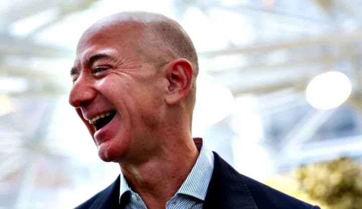
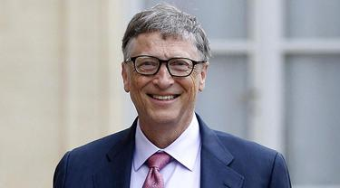

Harta Elon Musk 4 Tahun Lagi Diprediksi Rp 14.588 Triliun

Jakarta, CNBC Indonesia - Elon Musk diprediksi bisa menjadi triliuner pertama di dunia pada 2025 mendatang. Hal ini berdasarkan laporan yang diunggah di blog NextBigFuture berdasarkan analisis Ark Invest Management yang menghitung kemungkinan nilai saham Tesla empat tahun lagi.
Terungkap Penghasilan Jeff Bezos Tiap Detik, Setara Gaji Tahunan Karyawan Biasa di Jakarta!
WE Online, Jakarta - Dengan kekayaan bersih USD182 miliar (Rp2.677 triliun), Jeff Bezos, pendiri dan CEO Amazon, adalah orang terkaya di dunia.
Fakta Kekayaan Bill Gates, Hasilkan Jutaan Rupiah dalam 1 Detik
Liputan6.com, Jakarta - Bos Microsoft, Bill Gates dikenal sebagai salah satu miliarder terkaya di dunia. Kekayaannya hingga saat ini mencapai USD 107 miliar alias Rp 1.495 triliun (asumsi kurs 1 Dolar sama dengan Rp 13.976).
Fakta Kekayaan Bill Gates, Hasilkan Jutaan Rupiah dalam 1 Detik
Liputan6.com, Jakarta - Bos Microsoft, Bill Gates dikenal sebagai salah satu miliarder terkaya di dunia. Kekayaannya hingga saat ini mencapai USD 107 miliar alias Rp 1.495 triliun (asumsi kurs 1 Dolar sama dengan Rp 13.976).